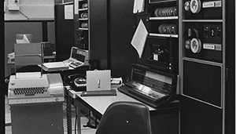

1970
Världens första mejl skickas
Världens första mejl skickas 1971 av Ray Tomlinson. Mejlet skickar han till sig själv, från en dator till en annan som står precis bredvid varandra. Alltsedan dess har mejl varit en av de populäraste kommunikationskanalerna på internet. I slutet på 60-talet jobbar MIT-studenten Ray Tomlinson på forsknings- och utvecklingsföretaget Bolt, Beranek och Newman, bland annat med teknik relaterad till Arpanet, internets föregångare.
